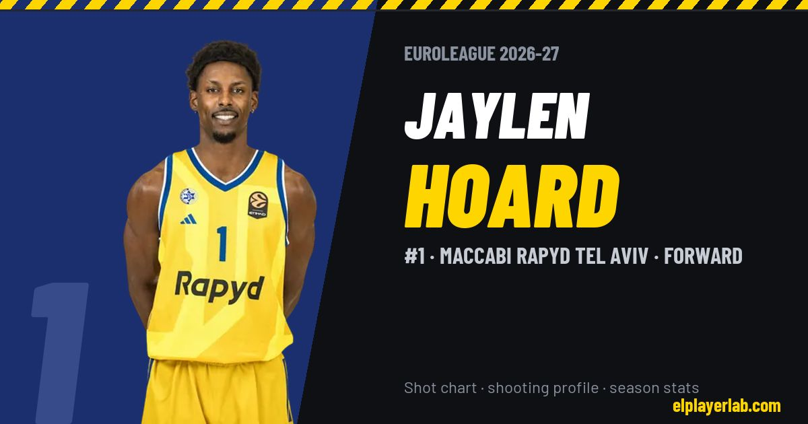

Maccabi Rapyd Tel Aviv · Euroleague 2026-27
Jaylen Hoard
#1 · Forward · Maccabi Rapyd Tel Aviv · 2026-27 · 3 games · 8.3 pts · 4.3 reb · 0.7 ast a game

- Number
- 1
- Position
- Forward
- Height
- 204 cm
- Weight
- 98 kg
- Born
- 1999-03-30
- Country
- United States of America
Career
- Maccabi 2024-2027
- Hapoel Tel Aviv 2022-2024
- Oklahoma City Thunder (NBA) 2020-2021
- Oklahoma City Blue 2021-2022
- Texas Legends (loan) 2019-2020
- Portland Trail Blazers (NBA) 2019-2020
- Wake Forest (NCAA) 2018-2019
Euroleague Player Lab: shot charts, shooting profiles and season stats for every player, rebuilt after every game.